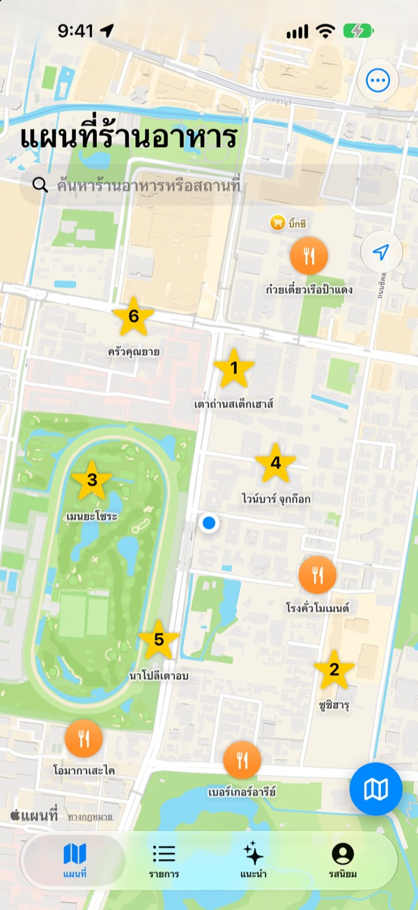
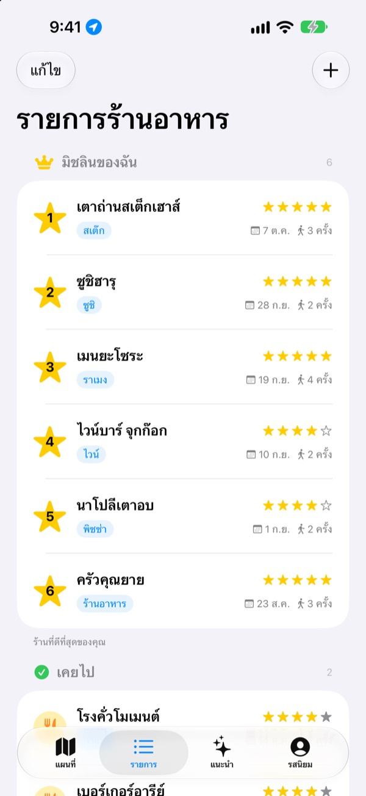
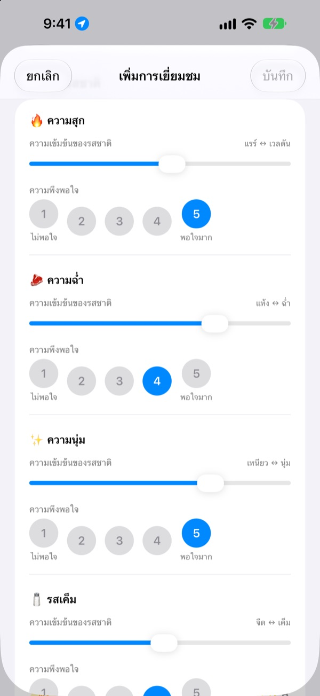
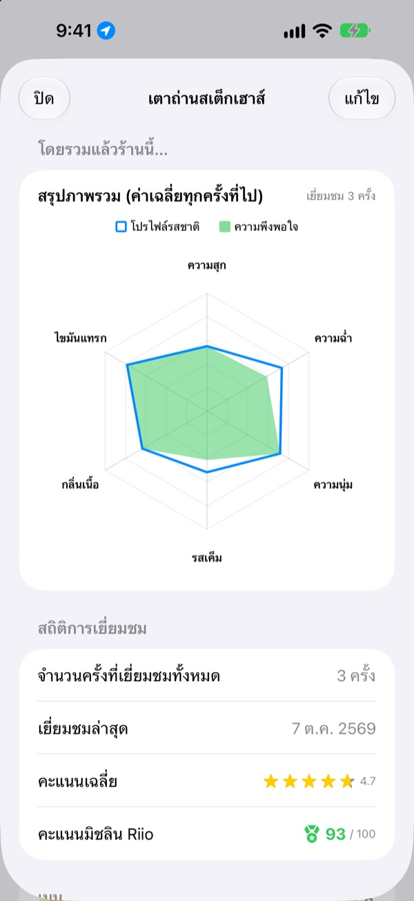

ร้านอร่อยที่เคยไป
ไม่มีวันลืมอีกต่อไป
ปักหมุดร้านที่เคยไปและร้านที่อยากไปไว้บนแผนที่ แล้วบันทึกเมนูที่สั่ง รูปภาพ และรสชาติทุกครั้งที่ไป เวลาคิดไม่ออกว่าจะกินที่ไหน บันทึกของคุณเองจะให้คำตอบ
ใช้ได้ทุกฟีเจอร์ฟรี ไม่ต้องสมัครสมาชิก บันทึกอยู่ใน iPhone ของคุณเท่านั้น

ลองให้คะแนนสักจาน
เลือกประเภทอาหาร แล้วให้คะแนนความเข้มข้นของแต่ละรสและความพึงพอใจ หัวข้อและวิธีคิดคะแนนเหมือนการบันทึกในแอปทุกอย่าง
ร้านนั้นอร่อยนะ แต่สั่งอะไรไปนะ
จำได้ว่าร้านนั้นถูกใจมาก แต่ชื่อร้านเลือนไปแล้ว ส่วนเมนูที่สั่งหรือน้ำซุปเค็มไปไหมก็จำไม่ได้เลย สุดท้ายก็ต้องค้นหาใหม่และอ่านรีวิวของคนอื่น Insaeng เก็บสิ่งที่คุณได้ชิมเองไว้บนแผนที่ ให้การเลือกครั้งต่อไปมาจากประสบการณ์ของคุณ
เคยไป อยากไป และมิชลินของฉัน
ค้นหาบนแผนที่หรือแตะสถานที่ใกล้ ๆ ก็บันทึกได้ทันที แยกร้านที่เคยไปกับร้านที่อยากไปไว้คนละกลุ่ม และจัดอันดับร้านโปรดหกร้านตั้งแต่อันดับ 1 ถึง 6
เวลามีคนถามหาร้านอร่อย ก็แค่เปิดรายการนี้ให้ดู

ให้คะแนนด้วยหัวข้อที่เข้ากับอาหาร
ความเข้มข้นของรส เช่น ความเผ็ดหรือความเค็ม ปรับด้วยแถบเลื่อน ส่วนความชอบให้คะแนนแยกตั้งแต่ 1 ถึง 5 สเต๊กดูระดับความสุกและความฉ่ำ ซูชิดูข้าวและหน้าซูชิ ราเมนดูน้ำซุปและเส้น หัวข้อเปลี่ยนไปตามอาหาร
แต่ละครั้งที่ไปยังเก็บเมนู รูปภาพ ดาว และโน้ตไว้ด้วย

ร้านที่ควรกลับไป ดูได้จากตัวเลข
เมื่อไปหลายครั้ง หน้าร้านจะแสดงสรุปภาพรวมจากค่าเฉลี่ยทุกครั้งที่ไป และคะแนนมิชลิน Riio เต็ม 100 ที่รวมดาวกับความพึงพอใจไว้ด้วยกัน
เมื่อออกจากร้านที่บันทึกไว้ สักพักจะมีการแจ้งเตือนให้บันทึก จะได้ไม่ลืม

เริ่มได้ในสามขั้นตอน
- 1
บันทึกร้าน
ค้นหาบนแผนที่หรือแตะสถานที่ใกล้ ๆ เพื่อเพิ่ม
- 2
ไปแล้วจดไว้
บันทึกเมนู รูปภาพ ดาว และรสชาติ การให้คะแนนรสชาติจะทำหรือไม่ก็ได้
- 3
เลือกร้านต่อไป
ดู Top 6 และคะแนน แล้วนำทางด้วย Apple Maps, Kakao Map หรือ Naver Map
หัวข้อการให้คะแนนตามประเภทอาหาร
- 🍽️ ทั่วไป
- ความเผ็ด · ความเข้มข้น · ความหวาน · ความเค็ม · ความมัน · รสธรรมชาติ
- 🥩 สเต๊ก
- ความสุก · ความฉ่ำ · ความนุ่ม · รสเค็ม · กลิ่นเนื้อ · ไขมันแทรก
- 🍣 ซูชิ
- ชาริ (ข้าว) · เนตะ (หน้าซูชิ) · วาซาบิ · ความสมดุล · การปั้น · อุณหภูมิ
- 🍜 ราเมง
- น้ำซุป · เส้น · ชาชู · ท็อปปิ้ง · อุณหภูมิ · ความสมดุล
- 🍕 พิซซ่า
- แป้ง · ซอส · ชีส · ความสุก · ท็อปปิ้ง · ความสมดุล
- 🍷 ไวน์
- บอดี้ · แทนนิน · ความเปรี้ยว · กลิ่นหอม · รสติดปลาย · ความสมดุล
- ☕ กาแฟ
- ความเปรี้ยว · บอดี้ · กลิ่นรส · รสติดปลาย · ความหวาน · ความสมดุล
อาหารอื่น ๆ ให้คะแนนด้วยหัวข้อทั่วไปในแถวแรก และสร้างหมวดอาหารเองได้ด้วย
คำถามที่พบบ่อย
เพิ่มร้านอาหารได้อย่างไร
พิมพ์ชื่อร้านในช่องค้นหาด้านบนของแผนที่ แล้วแตะ “เพิ่มในรายการร้านของฉัน” จากผลการค้นหา จะแตะสถานที่ใกล้เคียงที่แสดงบนแผนที่เพื่อเพิ่มทันทีก็ได้ ร้านที่ค้นหาไม่เจอ ให้เพิ่มเองที่ตำแหน่งปัจจุบันหรือจุดที่เลือกบนแผนที่
“เคยไป” “อยากไป” และ Top 6 คืออะไร
เคยไป – ร้านที่คุณไปมาแล้ว สามารถบันทึกการไปร้านได้ อยากไป – ร้านที่อยากไปสักวัน เมื่อไปมาแล้วให้เปลี่ยนเป็น “เคยไป” ในหน้ารายละเอียดของร้าน Top 6 (มิชลินของฉัน) – จัดอันดับร้านโปรดที่สุดหกร้านตั้งแต่อันดับ 1 ถึง 6 ร้านที่อยู่ในรายการ “อยากไป” ไม่สามารถตั้งเป็น Top 6 ได้
จำเป็นต้องประเมินรสชาติไหม
ไม่จำเป็น ทำหรือไม่ก็ได้ ถ้าให้คะแนนไว้ ความเข้มข้นของรสและความพึงพอใจจะไปรวมในสรุปภาพรวมของร้าน และนับรวมในคะแนนมิชลิน Riio ด้วย
การแจ้งเตือน “วันนี้ไปร้านมาเป็นอย่างไรบ้าง?” จะมาเมื่อไร
หากคุณอยู่ใกล้ร้านที่บันทึกไว้นานกว่า 5 นาทีแล้วออกไป การแจ้งเตือนจะมาประมาณ 40 นาทีหลังจากนั้น ฟีเจอร์นี้ต้องอนุญาตตำแหน่งแบบ “เสมอ” และอนุญาตการแจ้งเตือน หากไม่ต้องการรับการแจ้งเตือน ให้ปิดการแจ้งเตือนที่ ตั้งค่า > แอป > Insaeng หรือเปลี่ยนตำแหน่งเป็น “ขณะใช้แอป” การตรวจตำแหน่งเกิดขึ้นภายในอุปกรณ์เท่านั้น ไม่มีการเก็บเส้นทางการเดินทางหรือส่งออกไปภายนอก
ถ้าไม่อนุญาตตำแหน่ง จะใช้แอปไม่ได้หรือเปล่า
ใช้ได้ คุณเลือกตำแหน่งบนแผนที่เองเพื่อเพิ่มร้านและบันทึกการไปร้านได้ มีเพียงการแสดงตำแหน่งปัจจุบันและการแจ้งเตือนหลังไปร้านเท่านั้นที่ใช้ไม่ได้
ค้นหาสถานที่แล้วไม่พบผลลัพธ์
การค้นหาสถานที่ต้องเชื่อมต่ออินเทอร์เน็ต ลองค้นหาด้วยชื่ออื่นหรือคีย์เวิร์ดที่สั้นลง หากยังไม่พบ ให้เลือกจุดบนแผนที่แล้วเพิ่มร้านเอง
บันทึกเก็บไว้ที่ไหน ซิงค์กับอุปกรณ์อื่นได้ไหม
ร้าน บันทึกการไปร้าน และรูปภาพ จัดเก็บไว้ใน iPhone เครื่องนี้เท่านั้น เวอร์ชันปัจจุบันยังไม่รองรับการซิงค์กับอุปกรณ์อื่น และการสำรองและกู้คืนข้อมูล iCloud ในการตั้งค่าก็ยังใช้งานไม่ได้ อย่างไรก็ตาม ข้อมูลของแอปจะรวมอยู่ในการสำรองข้อมูล iPhone ทั้งเครื่อง (สำรองข้อมูล iCloud หรือสำรองข้อมูลในคอมพิวเตอร์)
อยากลบบันทึกทั้งหมด
ในการตั้งค่าของหน้าจอแผนที่ แตะ “ลบข้อมูลทั้งหมด” เพื่อลบร้านและบันทึกการไปร้าน การลบนี้ย้อนกลับไม่ได้ โปรดระวัง หากต้องการลบรูปภาพทั้งหมดด้วยโดยไม่เหลือเลย ให้ลบแอป
ถ้าลบแอปแล้วติดตั้งใหม่ บันทึกจะยังอยู่ไหม
ไม่อยู่ เนื่องจากบันทึกจัดเก็บไว้ในอุปกรณ์เท่านั้น เมื่อลบแอปบันทึกก็จะถูกลบไปด้วย โปรดตรวจสอบให้ดีก่อนลบแอป
ใช้ฟรีทั้งหมดจริงไหม
จริง ทุกฟีเจอร์ใช้ได้ฟรี ไม่มีโฆษณาและไม่ต้องสมัครบัญชี ส่วน “สนับสนุนผู้พัฒนา” ในการตั้งค่าจะทำหรือไม่ก็ได้ และไม่ได้ปลดล็อกอะไรเพิ่ม
หากปัญหาของคุณไม่มีคำตอบด้านบน ส่งถึงเราได้ทันทีที่ การตั้งค่า > การสนับสนุน ในแอป หรือส่งอีเมลมาที่ mizzking75@gmail.com หากแจ้งเวอร์ชันแอป รุ่น iPhone และสิ่งที่คุณทำในหน้าจอใดมาด้วย เราจะตรวจสอบได้เร็วขึ้น